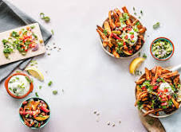

Green Vegetables
Dark Green Vegetables Eat dark green vegetables at least three to four times a week.Good options include broccoli,peppers, brussel sprouts and leafy greens like kale and spinach.

Beans and Lentils
Try to eat a bean-based meal at least once a week. Try to add legumes, including beans and lentils, to soups, stews, casseroles, salads and dips or eat them plain.

Berries
Include two to four servings of fruit in your diet each day. Try to eat berries such as raspberries, blueberries, blackberries and strawberries.